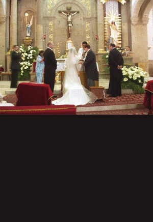

A Bouquet for the Virgin Mary
In Mexico at a Catholic wedding ceremony, the bride offers her bouquet to the Virgin Mary and leaves it at the foot of the statue in order to thank her and ask her for a good life and for her blessing. This is a solemn moment at the end of the ceremony. After that, she meets her groom and they receive the priest's blessing and that means the ceremony is finished.
|
Two souls united in the “lasso” of love.
- It is customary during the vows for a white ribbon or for a rosary, called a “lasso,” to be draped around the necks of the newlyweds to symbolize their joining together. It is also customary for the groom to present his wife with thirteen gold coins during the ceremony, symbolizing the groom’s commitment to support his new wife. As the couple leaves the church it is customary for red beads to be tossed at them as a means of insuring the new couple good luck.
- At a Mexican wedding reception it is customary for the guests to form a heart-shaped circle around the wedding couple as they engage in their first dance as husband and wife.
- A paper mach? pi?ata, often shaped like a heart and filled with candy, is suspended from the ceiling and the children take turns swinging at it with a stick until it is broken and the candy is shared among all the guests.
|
Wedding gifts are given to help the new couple establish their new home.
Wedding gifts are a way for friends and family to help the young couple set up their new home together and to help smooth the path of their new life together.
|
Previous
1
2
3
4
5
Next